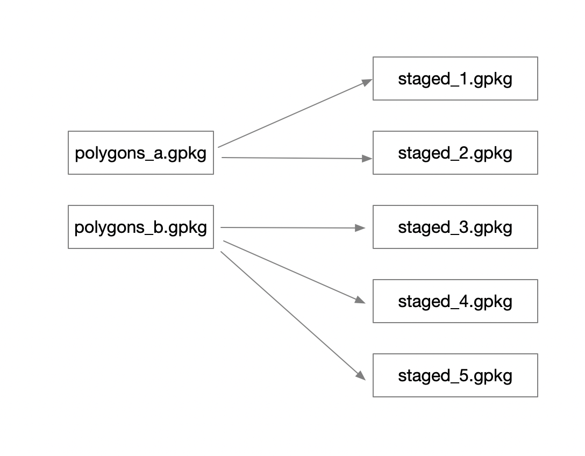

18 Workflows for data staging and publishing
18.1 Learning Objectives
- NSF archival policies for large datasets
- Data transfer tools
- Uploading large datasets to the Arctic Data Center
- Workflow tools
18.2 NSF policy for large datasets
Many different research methods can generate large volumes of data. Numerical modeling (such as climate or ocean models) and anything generating high resolution imagery are two examples we see very commonly. The NSF requirements state:
The Office of Polar Programs policy requires that metadata files, full data sets, and derived data products, must be deposited in a long-lived and publicly accessible archive.
Metadata for all Arctic supported data sets must be submitted to the NSF Arctic Data Center (https://arcticdata.io).
Exceptions to the above data reporting requirements may be granted for social science and indigenous knowledge data, where privacy or intellectual property rights might take precedence. Such requested exceptions must be documented in the Data Management Plan.
This means that datasets that are already published on a long lived archive do not need to be replicated to the Arctic Data Center, only a metadata record needs to be included. Often, the curation staff at the Arctic Data Center can replicate metadata programmatically such that the researcher in this case doesn’t have to publish their data twice. As an example of the myriad of scenarios that can arise in this realm, say a research project accesses many terabytes of VIIRS satellite data. In this case, the original satellite data does not need to be republished on the Arctic Data Center, since it is already available publicly, but the code that accessed it, and derived products, can be published, along with a citation to the satellite data indicating provenance.
Similarly, for some numerical models, if the model results can be faithfully reproduced from code, the code that generates the models can be a sufficient archival product, as opposed to the code and the model output. However, if the model is difficult to set up, or takes a very long time to run, we would probably reccommend publishing the output as well as code.
The Arctic Data Center is committed to archiving data of any volume, and our curation team is there to help researchers make decisions alongside NSF program officers, if necessary, to decide which portions of a large-data collection effort should be published in the archive.
18.3 Data transfer tools
Now that we’ve talked about what types of large datasets you might have that need to get published on the Arctic Data Center, let’s discuss how to actually get the data there. If you have even on the order of only 50GB, or more than 500 files, it will likely be more expedient for you to transfer your files via a command line tool than uploading them via our webform. So you know that you need to move a lot of data, how are you going to do it? More importantly, how can you do it in an efficient way?
There are three key elements to data transfer efficiency:
- endpoints
- network
- transfer tool
Endpoints
The from and to locations of the transfer, an endpoint is a remote computing device that can communicate back and forth with the network to which it is connected. The speed with which an endpoint can communicate with the network varies depending on how it is configured. Performance depends on the CPU, RAM, OS, and disk configuration. One key factor that affects data transfer speed is how quickly that machine can write data to disk. Slow write speeds will throttle a data transfer on even the fastest internet connection with the most streamlined transfer tool. Examples of endpoints could be:
- NCEAS
included-crabserver - Your standard laptop
- A cloud service like AWS
Network speed
Network speed determines how quickly information can be sent between endpoints. It is largely, but not enitrely, dependent on what you pay for. Importantly, not all networks are created equal, even if they nominally have the same speed capability. Wired networks get significantly more speed than wireless. Networks with lots of “stuff” along the pipe (like switches or firewalls) can perform worse than those that don’t. Even the length and type of network cabling used can matter.
Transfer tools
Poll: what data transfer tools do you use regularly?
Finally, the tool or software that you use to transfer data can also significantly affect your transfer speed. There are a lot of tools out there that can move data around, both GUI driven and command line. We’ll discuss a few here, and their pros and cons.
scp
scp or secure copy uses ssh for authentication and transfer, and it is included with both unix and linux. It requires no setup (unless you are on a Windows machine and need to install), and if you can ssh to a server, you can probably use scp to move files without any other setup. scp copies all files linearly and simply. If a transfer fails in the middle, it is difficult to know exactly what files didn’t make it, so you might have to start the whole thing over and re-transfer all the files. This, obviously, would not be ideal for large data transfers. For a file or two, scp is a fine tool to use.
rsync
rsync is similar to scp, but syncs files/directories as opposed to copying. This means that rsync checks the destination to see if that file (with the same size and modified date) already exists. If it does, rsync will skip the file. This means that if an rsync transfer fails, it can be restarted again and will pick up where it left off, essentially. Neat!
Globus
Globus is a software that uses multiple network sockets simultaneously on endpoints, such that data transfers can run in parallel. As you can imagine, that parallelization can dramatically speed up data transfers. Globus, like rsync can also fail gracefully, and even restart itself. Globus does require that each endpoint be configured as a Globus node, which is more setup than is required of either scp or rsync. Many instituions computing resources may have endpoints already configured as Globus endpoints, so it is always worth checking in with any existing resources that might already be set up before setting up your own. Although Globus is a free software, there are paid options which provide support for configuring your local workstation as a Globus node. Globus is a fantastic tool, but remember the other two factors controlling data transfer, it can only help so much in overcoming slow network or write speeds.
18.3.0.1 AWS sync
Amazon Web Services (AWS) has a Command Line Interface (CLI) that includes a sync utility. This works much like rsync does in that it only copies new or updated files to the destination. The difference, of course, is that AWS sync is specifically built to work with interacting with the AWS cloud, and is compatible with S3 buckets.
18.3.0.2 nc
nc (or netcat) is a low level file transfer utility that is extremely efficient when moving files around on nodes in a cluster. It is not the easiest of these tools to use, however, in certain situations it might be the best option because it has the least overhead, and therefore can run extremely efficiently.
18.4 Documenting large datasets
The Arctic Data Center works hard to support datasets regardless of size, but we have performance considerations as well, and large datasets sometimes need special handling and require more processing time from our curation team. To help streamline a large dataset submission we have the following reccommendations:
- use self documenting file formats, for metadata efficiency
- netcdf
- geotiff, geopackage
- regular, parseable filenames and consistent file formatting
- communicate early and often with the Arctic Data Center staff, preferably before you start a submission and well before your final report is due
18.5 Workflow tools
Preparing data for running analysis, models, and visualization processes can be complex, with many dependencies among datasets, as well as complex needs for data cleaning, munging, and integration that need to occur before “analysis” can begin.
Many research projects would benefit from a structured approach to organizing these processes into workflows. A research workflow is an ordered sequence of steps in which the outputs of one process are connected to the inputs of the next in a formal way. Steps are then chained together to typically create a directed, acyclic graph that represents the entire data processing pipeline.
This hypothetical workflow shows three processing stages for downloading, integrating, and mapping the data, along with the outputs of each step. This is a simplified rendition of what is normally a much more complex process.

Whether simple or complex, it is helpful to conceptualize your entire workflow as a directed graph, which helps to identify the explicit and implicit dependencies, and to plan work collaboratively.
18.5.1 Workflow dependencies and encapsulation
While there are many thousands of details in any given analysis, the reason to create a workflow is to structure all of those details so that they are understandable and traceable. Being explicit about dependencies and building a hierarchical workflow that encapsulates the steps of the work as independent modules. So the idea is to focus the workflow on the major steps in the pipeline, and to articulate each of their dependencies.
Workflows can be implemented in many ways, with various benefits:
- as a conceptual diagram
- as a series of functions that perform each step through a controlling script
- as a series functions managed by a workflow tool like
parsl,snakemake, orray - many others…
18.5.2 DAGs
While managing workflows solely as linked functions works, the presence of side-effects in a workflow can make it more difficult to efficiently run only the parts of the workflow where items have changed. Many workflow systems have been created to provide a structured way to specify, analyze, and track dependencies, and to execute only the parts of the workflow that are needed.
A Directed Acyclic Graph (DAG) is a diagram that shows the dependencies of a workflow, whether they are data dependencies or process dependencies. Below is an example of a simplified DAG of the first step of the group project:

This graph only shows data dependencies, but process dependencies can also exist.
In your groups, draw out a simplified version of the rest of the workflow. What dependencies, both data and process based, exist?
A more realistic workflow: https://github.com/NCEAS/scalable-computing-examples/tree/main/workflows